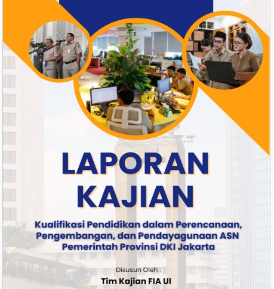

<!doctype html>
<html lang="id">
  <link rel="stylesheet" href="https://unpkg.com/aos@next/dist/aos.css" /> </html>head>
    <meta charset="UTF-8" />
    <meta name="viewport" content="width=device-width, initial-scale=1.0" />
    <title>Dwi Ramadhan — Public Policy & Social Researcher </title>
    <link rel="preconnect" href="https://fonts.googleapis.com" />
    <link href="https://fonts.googleapis.com/css2?family=Inter:wght@300;400;500;600;700;800&family=Space+Grotesk:wght@400;500;600;700&family=JetBrains+Mono:wght@400;500;600&display=swap" rel="stylesheet" />
    <link href="https://cdn.jsdelivr.net/npm/aos@2.3.4/dist/aos.css" rel="stylesheet" />
    <link rel="stylesheet" href="style.css" />
  </head>
  <body>
    <div class="progress-bar" id="progress"></div>

    <div class="bg-blobs">
      <div class="blob b1"></div>
      <div class="blob b2"></div>
      <div class="blob b3"></div>
    </div>
    <div class="bg-grid"></div>

    <nav id="nav">
      <div class="container nav-inner">
        <div class="logo">
          <div class="logo-mark">{;}</div>
          Dwi Ramadhan Portofolio's<span>.</span>
        </div>
        <div class="nav-links">
          <a href="#about">About</a>
          <a href="#skills">Skills</a>
          <a href="#expertise">Expertise</a>
          <a href="#work">Work</a>
          <a href="#experience">Organizational Experience</a>
          <a href="#publication">Publication</a>
          <a href="#contact">Contact</a>
        </div>
      </div>
    </nav>

    <header class="hero">
      <div class="container hero-grid">
        <div data-aos="fade-up">
          <div class="badge"><span class="dot"></span> Open for research & policy analyst roles</div>
          <h1>From Data to Policy. Turning Data into Strategic Policy <span class="grad">.</h1>
          <span class="typed"><span id="typed-text"></span><span class="cursor"></span></span>
          <p class="lead">Junior Policy Analyst with experience in public policy research, quantitative analysis, and evidence synthesis. Skilled in evaluating policy issues, analyzing institutional data, and translating research findings into actionable recommendations to support evidence-based policymaking and public-sector governance.</p>
          <div class="cta-group">
            <a href="#work" class="btn btn-primary">Projects & Research Experience →</a>
            <a href="#contact" class="btn btn-ghost">Let's Collaborate</a>
          </div>
        </div>

        <div class="avatar-wrap" data-aos="fade-up" data-aos-delay="200">
          <div class="profile-photo-wrapper">
            
          </div>
          <div class="float-card">
            <div class="ic">{ }</div>
            <div>
              <strong>5+</strong>
              Research and Data Analyst Project
            </div>
          </div>
        </div>
      </div>
    </header>

    <section id="about">
  <div class="container about-grid">
  <!-- Gambar Profil di Sebelah Kiri -->
  <div class="about-image" data-aos="fade-right">
    
  </div>

  <!-- Konten Teks di Sebelah Kanan -->
  <div class="about-content" data-aos="fade-left" data-aos-delay="150">
    <h2 class="section-title">Turning Data into Strategic Policy</h2>
      
      <p>
        I am a <strong>Research & Policy Analyst</strong> with an academic background in <strong>Public Administration from Universitas Indonesia</strong>, graduating with a GPA of <strong>3.90/4.00</strong>. I have experience in <strong>quantitative research, data analysis, and public policy research</strong>, with a strong focus on leveraging empirical evidence to inform more strategic, data-driven decision-making.
      </p>

      <p>
        My experience includes analyzing data from <strong>30 government agencies</strong> to support merit-based human resource planning, managing data and surveys for strategic reporting and university rankings, and conducting research on public governance and public sector policy. I am also proficient in statistical data analysis using <strong>SPSS</strong>, survey instrument development using <strong>LimeSurvey</strong>, and literature synthesis to produce analytical insights and evidence-based policy recommendations.
      </p>

      <p>
        I am particularly interested in exploring how <strong>data, research, and policy evaluation</strong> can be translated into meaningful insights, actionable recommendations, and improvements in public governance.
      </p>
    </div>
  </div>
</section>

 

<!-- RESEARCH HIGHLIGHTS -->
<section class="research-highlights">
  <div class="research-heading">
    <span class="research-label">RESEARCH PROFILE</span>
    <h3>Research at A Glance</h3>
    <p>A snapshot of my research experience and analytical work</p>
  </div>

  <div class="about-stats">
    <div class="stat">
      <div class="num">30+</div>
      <span>Government Agencies</span>
      <p>Cross-agency data analysis for public-sector planning</p>
    </div>

    <div class="stat">
      <div class="num">5</div>
      <span>Analytical Articles</span>
      <p>Research on public policy and governance</p>
    </div>

    <div class="stat">
      <div class="num">3</div>
      <span>Literature Reviews</span>
      <p>Evidence synthesis to support policy analysis</p>
    </div>

    <div class="stat">
      <div class="num">3+</div>
      <span>Research Areas</span>
      <p>Public policy, digital governance, and public-sector performance</p>
    </div>
  </div>
</section>
<!-- END RESEARCH HIGHLIGHTS -->

    <section id="skills" style="background: var(--surface)">
      <div class="container">
        <div class="section-head" data-aos="fade-up">
          <span class="section-tag">// skills</span>
          <h2 class="section-title">Core Competencies:Analytics & Policy Architecture</h2>
        </div>
        <div class="skills-grid">
          <div data-aos="fade-up">
            <div class="skill-item">
              <div class="skill-top"><span>Public Policy & Governance Analysis</span><span>92%</span></div>
              <div class="skill-bar"><div class="skill-fill" style="--w: 92%"></div></div>
            </div>
            <div class="skill-item">
              <div class="skill-top"><span>Quantitative Research Methodology</span><span>90%</span></div>
              <div class="skill-bar"><div class="skill-fill" style="--w: 90%"></div></div>
            </div>
            <div class="skill-item">
              <div class="skill-top"><span>Data Analytics (SPSS, VS Code, Excel)</span><span>88%</span></div>
              <div class="skill-bar"><div class="skill-fill" style="--w: 88%"></div></div>
            </div>
          </div>
          <div data-aos="fade-up" data-aos-delay="150">
            <div class="skill-item">
              <div class="skill-top"><span>Policy Evaluation & Frameworks</span><span>88%</span></div>
              <div class="skill-bar"><div class="skill-fill" style="--w: 88%"></div></div>
            </div>
            <div class="skill-item">
              <div class="skill-top"><span>Survey Logic Programming (LimeSurvey)</span><span>85%</span></div>
              <div class="skill-bar"><div class="skill-fill" style="--w: 85%"></div></div>
            </div>
            <div class="skill-item">
              <div class="skill-top"><span>Data Cleansing & Data Coding</span><span>85%</span></div>
              <div class="skill-bar"><div class="skill-fill" style="--w: 85%"></div></div>
            </div>
          </div>
        </div>

        <div class="tag-list" data-aos="fade-up">
          <span class="skill-tag">SPSS</span>
          <span class="skill-tag">Microsoft Office</span>
          <span class="skill-tag">LimeSurvey</span>
          <span class="skill-tag">Data Cleansing</span>
          <span class="skill-tag">Survey Design</span>
          <span class="skill-tag">Policy Brief</span>
          <span class="skill-tag">Stakeholder Engagement</span>
          <span class="skill-tag">Project Management</span>
        </div>

        <div class="marquee">
          <div class="marquee-track">
            <span>Public Policy</span><span>•</span><span>Research Methods</span><span>•</span><span>Data Analysis</span><span>•</span> <span>SPSS</span><span>•</span><span>Policy Evaluation</span><span>•</span><span>Survey Design</span
            ><span>•</span> <span>LimeSurvey</span><span>•</span><span>Data Visualization</span><span>•</span><span>Stakeholder Engagement</span><span>•</span> <span>Public Policy</span><span>•</span><span>Research Methods</span
            ><span>•</span><span>Data Analysis</span><span>•</span> <span>SPSS</span><span>•</span><span>Policy Evaluation</span><span>•</span><span>Survey Design</span><span>•</span> <span>LimeSurvey</span><span>•</span
            ><span>Data Visualization</span><span>•</span><span>Stakeholder Engagement</span><span>•</span>
          </div>
        </div>
      </div>
    </section>

  <section id="expertise">
  <div class="container">
    <div data-aos="fade-up">
      <span class="section-tag">// expertise</span>
      <h2 class="section-title">Core Expertise & Technical Skills</h2>
    </div>

    <div class="skills-grid">
      <!-- Card 1: Policy & Public Governance -->
      <div class="skill-card" data-aos="fade-up">
        <div class="card-header">
          <h3>🏛️ Policy & Public Governance</h3>
        </div>
        <div class="badge-group">
          <span class="badge">📜 Public Policy Analysis</span>
          <span class="badge">⚖️ Policy Evaluation</span>
          <span class="badge">🌐 Digital Governance</span>
          <span class="badge">💻 E-Government Assessment</span>
          <span class="badge">👔 Merit-Based HR Planning</span>
        </div>
      </div>

      <!-- Card 2: Quantitative Research & Methods -->
      <div class="skill-card" data-aos="fade-up" data-aos-delay="100">
        <div class="card-header">
          <h3>🔬 Quantitative Research & Methods</h3>
        </div>
        <div class="badge-group">
          <span class="badge">📐 Quantitative Methodology</span>
          <span class="badge">🧪 Hypothesis Testing</span>
          <span class="badge">🔍 Qualitative Triangulation</span>
          <span class="badge">📚 Literature Review Synthesis</span>
          <span class="badge">🗂️ Secondary Data Synthesis</span>
        </div>
      </div>

      <!-- Card 3: Data Analytics & Tools -->
      <div class="skill-card" data-aos="fade-up" data-aos-delay="150">
        <div class="card-header">
          <h3>📊 Data Analytics & Tools</h3>
        </div>
        <div class="badge-group">
          <span class="badge">📈 SPSS</span>
          <span class="badge">📊 Advanced Microsoft Excel</span>
          <span class="badge">🧹 Data Cleansing</span>
          <span class="badge">🏷️ Data Coding</span>
          <span class="badge">💻 VS Code</span>
          <span class="badge">📉 Data Visualization</span>
        </div>
      </div>

      <!-- Card 4: Survey Engineering -->
      <div class="skill-card" data-aos="fade-up" data-aos-delay="200">
        <div class="card-header">
          <h3>📋 Survey Engineering</h3>
        </div>
        <div class="badge-group">
          <span class="badge">⚙️ LimeSurvey Programming</span>
          <span class="badge">🧠 Survey Logic Architecture</span>
          <span class="badge">📝 Questionnaire Design</span>
          <span class="badge">🎯 Response Rate Optimization</span>
          <span class="badge">🏆 University Rankings Survey</span>
        </div>
      </div>

      <!-- Card 5: Project Management & Execution -->
      <div class="skill-card" data-aos="fade-up" data-aos-delay="250">
        <div class="card-header">
          <h3>📁 Project Management & Execution</h3>
        </div>
        <div class="badge-group">
          <span class="badge">🗓️ Project Management</span>
          <span class="badge">📊 Performance Reporting</span>
          <span class="badge">📑 Strategic Reporting</span>
          <span class="badge">🗄️ Document Management</span>
        </div>
      </div>

      <!-- Card 6: Stakeholder Engagement & Leadership -->
      <div class="skill-card" data-aos="fade-up" data-aos-delay="300">
        <div class="card-header">
          <h3>🤝 Stakeholder Engagement & Leadership</h3>
        </div>
        <div class="badge-group">
          <span class="badge">👥 Stakeholder Engagement</span>
          <span class="badge">🔗 Cross-Functional Collaboration</span>
          <span class="badge">🧩 Team Coordination</span>
          <span class="badge">🏛️ Public Sector Consultation</span>
        </div>
      </div>
    </div>
  </div>
</section>

    <section id="work" style="background: var(--surface)">
      <div class="container">
        <div class="section-head" data-aos="fade-up">
          <span class="section-tag">// portfolio</span>
          <h2 class="section-title">Research, Data &amp; Policy Experience</h2>
        </div>

        <div class="work-grid">

          <!-- Proyek 1: Fakultas Ilmu Administrasi -->
          <div class="work-card" data-aos="fade-up" onclick="openProjectModal('modal-asisten')">
            <div class="work-thumb">
              
            </div>
            <div class="work-body">
              <h3>Lecturer Assistant — FIA UI</h3>
              <span>Lecturer Assistant Basic and Applied Research Method · 2025-2026</span>
              <div class="work-tags"><span>Mentoring Research</span><span>Reviewed Research</span><span>Providing Feedback </span></div>
            </div>
          </div>

          <!-- Proyek 1: Badan Kepegawaian Daerah DKI Jakarta -->
          <div class="work-card" data-aos="fade-up" onclick="openProjectModal('modal-bkd')">
            <div class="work-thumb">
              
            </div>
            <div class="work-body">
              <h3>BKD DKI Jakarta</h3>
              <span>Research Assistant· 2025</span>
              <div class="work-tags"><span>Cross-Agency Data Integration</span><span>Policy Research & Analysis</span><span>Merit-Based Workforce Planning</span></div>
            </div>
          </div>

          <!-- Proyek 2: Majelis Wali Amanat Universitas Indonesia -->
          <div class="work-card" data-aos="fade-up" data-aos-delay="100" onclick="openProjectModal('modal-mwa')">
            <div class="work-thumb">
              
            </div>
            <div class="work-body">
              <h3>Majelis Wali Amanat Universitas Indonesia</h3>
              <span>Research and Data Analyst· 2024</span>
              <div class="work-tags"><span>Data Collection</span><span>Policy Recommendations</span><span> Mapped Indicators</span><span> Strategic Planning</span></div>
            </div>
          </div>

          <!-- Proyek 3: Tracer Study UI -->
          <div class="work-card" data-aos="fade-up" data-aos-delay="200" onclick="openProjectModal('modal-tracer')">
            <div class="work-thumb">
              
            </div>
            <div class="work-body">
              <h3>Tracer and Employer Study UI</h3>
              <span>Data Analyst· 2025-2026</span>
              <div class="work-tags"><span>LimeSurvey</span><span>Data Cleaning</span><span>Dashboard</span></div>
            </div>
          </div>

          <!-- Proyek 4: ICG FIA UI -->
          <div class="work-card" data-aos="fade-up" data-aos-delay="300" onclick="openProjectModal('modal-icg')">
            <div class="work-thumb">
              
            </div>
            <div class="work-body">
              <h3>Klaster ICG FIA UI</h3>
              <span>Junior Research Analyst· 2024-2026</span>
              <div class="work-tags"><span>Meta-Governance</span><span>Digital Divide</span><span>Policy Analysis</span></div>
            </div>
          </div>

          <!-- Proyek 6: Biro TREM UI -->
          <div class="work-card" data-aos="fade-up" data-aos-delay="500" onclick="openProjectModal('modal-trem')">
            <div class="work-thumb">
              
            </div>
            <div class="work-body">
              <h3>Rankings Analyst — Biro TREM UI</h3>
              <span>QS WUR, THE WUR, QS Sustainability · 2024</span>
              <div class="work-tags"><span>Ranking Management</span><span>Data Analyst</span><span>Data Processing</span></div>
            </div>
          </div>
        </div>
      </div>
    </section>


    <!-- ========================================== -->
    <!-- MODAL POP-UP UNTUK DETAIL PROYEK -->
    <!-- ========================================== -->

    <!-- Modal Proyek 1: Fakultas Ilmu Administrasi-->
    <div id="modal-asisten" class="project-modal">
      <div class="modal-content">
        <span class="close-modal" onclick="closeProjectModal('modal-asisten')">&times;</span>
        <div class="modal-slider">
          
           
           
        </div>
        <div class="modal-text">
          <h2>Teaching Assistant -- Fakultas Ilmu Administrasi</h2>
          <span class="modal-date">2025-2026</span>
          <p>Experienced Teaching Assistant responsible for guiding undergraduate students through every stage of research proposal development. Alongside teaching duties, actively conducted academic research focusing on "Pengaruh Literasi Keuangan Digital terhadap Ketahanan Finansial dalam Menghadapi Pinjaman Online Generasi Z DKI Jakarta" and "Tingkat Kesiapan Generasi Millenial dan Generasi Z Kota Depok dalam Menggunakan Aplikasi IKD”. Proficient in providing both individual and group guidance to ensure students grasp fundamental administrative research principles.</p>
          <p><strong>Role & Contributions:</strong></p>
<ul>
  <li>Mentored 70+ undergraduate students in research proposal development and academic writing.</li>
  <li>Evaluated research proposals, assignments, and examinations, providing feedback on methodology and analytical reasoning.</li>
  <li>Coordinated teaching materials and assessment strategies with the lead lecturer.</li>
  <li>Conducted academic research on digital financial literacy and financial resilience in the context of online lending, and on Millennials' and Generation Z's readiness to use the IKD application in Depok Area.</li>
</ul> </p>
          <div class="work-tags"><span>Data Integration</span><span>Policy Research</span><span>Merit Based Recruitment</span></div>
        </div>
      </div>
    </div>
    <!-- Modal Proyek 1: Badan Kepegawaian Daerah DKI Jakarta -->
    <div id="modal-bkd" class="project-modal">
      <div class="modal-content">
        <span class="close-modal" onclick="closeProjectModal('modal-bkd')">&times;</span>
        <div class="modal-slider">
          
          
          
        </div>
        <div class="modal-text">
          <h2>Research Technical Assistant — BKD DKI Jakarta</h2>
          <span class="modal-date">2025</span>
          <p>A comprehensive study conducted in collaboration with the private sector to provide a holistic understanding and strategic recommendations similar to practices in the private sector. This study aims to map job positions with applicants’ educational qualifications, serving as an instrument for developing standardized educational qualification criteria for positions and strengthening strategic human resource planning. The study developed evidence-based recommendations for standardized educational qualification frameworks across government agencies to strengthen merit-based human resource management and optimize workforce planning.</p>
          <p><strong>Role & Contributions:</strong></p>
<ul>
  <li>Integrated and standardized data from 30 government agencies.</li>
  <li>Synthesized academic literature and policy references.</li>
  <li>Collaborated on data integration and evidence-based policy recommendations.</li>
</ul> </p>
          <div class="work-tags"><span>Data Integration</span><span>Policy Research</span><span>Merit Based Recruitment</span></div>
        </div>
      </div>
    </div>

    <!-- Modal Proyek 2: Majelis Wali Amanat Universitas Indonesia -->
<div id="modal-mwa" class="project-modal">
  <div class="modal-content">
    <span class="close-modal" onclick="closeProjectModal('modal-mwa')">&times;</span>
    
    <div class="modal-slider">
      
      
      
    </div>

    <div class="modal-text">
      <h2>Data Analyst — MWA UI</h2>
      <span class="modal-date">2024</span>
      <p>MWA UI is an organization focused on formulating policies (planning) for the development of UI, both in the medium and long term, as well as evaluating and monitoring UI's achievements over the course of a year. In this role, I was tasked with data collection to serve as a reference prior to decision-making.</p>
      <p><strong>Role & Contributions:</strong></p>
      <ul>
        <li>Mapped institutional data across key university performance areas.</li>
        <li>Identified strategic indicators for UI development policy.</li>
        <li>Consolidated policy inputs from the Academic Senate (SA UI) and Council of Professors (DGB UI).</li>
      </ul> 
    </div> <!-- Penutup modal-text -->

  </div> <!-- Penutup modal-content (sebelumnya kurang) -->
</div> <!-- Penutup project-modal / modal-mwa (sebelumnya kurang) -->

    <!-- Modal Proyek 3: Tracer Study UI -->
    <div id="modal-tracer" class="project-modal">
      <div class="modal-content">
        <span class="close-modal" onclick="closeProjectModal('modal-tracer')">&times;</span>
        <div class="modal-slider">
          
          
          
        </div>
      <h2>Data Analyst — Tracer Study UI</h2>
      <span class="modal-date">2026</span>
      <p>Tracer Study Universitas Indonesia (TSUI), conducted online by the Directorate of Career Development and Alumni Relations (DPKHA UI). This study aimed to provide a clear picture of how relevant the education provided by UI is to the needs of the job market. It focused on evaluating alumni’s acquired competencies, satisfaction with their educational experience, the alignment between their field of study and current occupation, and the overall transition from higher education to professional careers.</p>
      <p><strong>Role & Contributions:</strong></p>
      <ul>
        <li>Supported end-to-end operations for UI's Employer Study 2026 in lime survey</li>
        <li>Cleaned, recoded, and visualized 10.000 alumni and employer data for the Rector Dashboard</li>
        <li>Coordinated the collection, compilation, and verification of 400 overseas alumni contacts to support alumni engagement and institutional outreach initiatives</li>
        <li>Coordinated alumni, employer, and faculty engagement through email and WhatsApp outreach</li>
      </ul> 
  </div> <!-- Penutup modal-content (sebelumnya kurang) -->
</div> <!-- Penutup project-modal / modal-mwa (sebelumnya kurang) -->

    <!-- Modal Proyek 4: ICG FIA UI -->
    <div id="modal-icg" class="project-modal">
      <div class="modal-content">
        <span class="close-modal" onclick="closeProjectModal('modal-icg')">&times;</span>
        <div class="modal-slider">
           
            
          
          
          
          
          
          
        </div>
        <div class="modal-text">
          <h2>Innovation and Comparative Governance FIA UI</h2>
          <span class="modal-date">2024-2026</span>
          <p>ICG FIA UI Research Cluster specializes in innovation, governance, ethics, and policy implementation challenges. It aims to develop scholarly insights that drive effective policy creation, focusing on key issues such as corruption, ethical governance, and administrative reform.</p>
          <p><strong>Role & Contributions:</strong></p>
      <ul>
        <li>Conducted three literature reviews on public-sector governance, including meta-governance and the digital divide, to synthesize key concepts and research findings.</li>
        <li>Produced five analytical articles on Indonesia&rsquo;s National Data Center (PDN), examining its development, international practices, and policy governance frameworks.</li>
        <li>Coordinated the collection, compilation, and verification of 400 overseas alumni contacts to support alumni engagement and institutional outreach initiatives</li>
      </ul> 
  </div> <!-- Penutup modal-content (sebelumnya kurang) -->
</div> <!-- Penutup project-modal / modal-mwa (sebelumnya kurang) -->
</div> <!-- Penutup project-modal / modal-mwa (sebelumnya kurang) -->

    <!-- Modal Proyek 7: Biro TREM UI -->
    <div id="modal-trem" class="project-modal">
      <div class="modal-content">
        <span class="close-modal" onclick="closeProjectModal('modal-trem')">&times;</span>
        <div class="modal-slider">
          
          
          
        </div>
        <div class="modal-text">
          <h2>Rankings Analyst — Biro TREM UI</h2>
          <span class="modal-date">2024</span>
          <p>Mengelola data untuk pemeringkatan QS WUR, THE WUR, dan QS Sustainability. Melakukan benchmarking, pemrosesan data, dan penyusunan laporan untuk meningkatkan posisi Universitas Indonesia di kancah global.</p>
          <p><strong>Peran:</strong> Ranking Management, Benchmarking, Data Processing.</p>
          <div class="work-tags"><span>Ranking Management</span><span>Benchmarking</span><span>Data Processing</span></div>
        </div>
      </div>
    </div>

    <section id="experience">
      <div class="container">
        <div class="section-head" data-aos="fade-up">
          <span class="section-tag">// experience</span>
          <h2 class="section-title">Organizational Experience.</h2>
        </div>

          <div class="tl-item" data-aos="fade-up" data-aos-delay="600">
            <span class="tl-dot"></span>
            <div class="tl-date">Jul — Agu 2024</div>
            <h3>Project and Research Development</h3>
            <div class="place">BINA CITAFIA UI · Bogor</div>
            <p>Mengembangkan indikator keberhasilan program literasi & numerasi, mendesain survei pra-implementasi dan evaluasi, serta menganalisis data untuk 50+ peserta anak usia 5-15 tahun.</p>
          </div>
          <div class="tl-item" data-aos="fade-up" data-aos-delay="700">
            <span class="tl-dot"></span>
            <div class="tl-date">Mar — Des 2023</div>
            <h3>Research and Development Studies</h3>
            <div class="place">BEM FIA UI 2023 · Depok</div>
            <p>Mengembangkan studi rekomendasi struktural & kultural untuk Polri, menganalisis data primer & sekunder untuk kajian reformasi KPK, dan membuat policy brief untuk mengurangi budaya KKN.</p>
          </div>
        </div>

   <section id="services" style="background: var(--surface); padding: 80px 0;">
  <div class="container">
    
    <div class="section-head" data-aos="fade-up" style="margin-bottom: 40px;">
      <span class="section-tag">//services</span>
      <h2 class="section-title">What I Can Do</h2>
    </div>

    <div class="services-grid">
      
      <!-- Card 1 -->
      <div class="service-card" data-aos="fade-up">
        <div class="service-num"></div>
        <h3>Public Policy Research & Analysis</h3>
        <p>Conduct policy research, analyze governance issues, and develop evidence-based recommendations to support public-sector decision-making.</p>
      </div>

      <!-- Card 2 -->
      <div class="service-card" data-aos="fade-up" data-aos-delay="100">
        <div class="service-num"></div>
        <h3>Quantitative Data Analysis</h3>
        <p>Process, clean, and analyze datasets using SPSS and Excel to identify patterns, interpret findings, and generate actionable insights.</p>
      </div>

      <!-- Card 3 -->
      <div class="service-card" data-aos="fade-up" data-aos-delay="200">
        <div class="service-num"></div>
        <h3>Research & Program Evaluation</h3>
        <p>Conduct literature reviews, develop performance indicators, and assess research findings to support institutional improvement.</p>
      </div>

      <!-- Card 4 -->
      <div class="service-card" data-aos="fade-up" data-aos-delay="300">
        <div class="service-num"></div>
        <h3>Survey Design &amp; Management</h3>
        <p>Develop questionnaires, manage LimeSurvey operations, monitor responses, and validate survey data for reliable analysis.</p>
      </div>

      <!-- Card 5 -->
      <div class="service-card" data-aos="fade-up" data-aos-delay="400">
        <div class="service-num"></div>
        <h3>Institutional Data &amp; Benchmarking</h3>
        <p>Integrate institutional datasets, analyze performance indicators, and conduct benchmarking to support strategic planning and reporting.</p>
      </div>

      <!-- Card 6 -->
      <div class="service-card" data-aos="fade-up" data-aos-delay="500">
        <div class="service-num"></div>
        <h3>Policy Writing & Evidence Synthesis</h3>
        <p>Synthesize academic literature and policy documents into analytical reports, research publications, and actionable recommendations.</p>
      </div>

    </div>
  </div>
</section>

    <section id="testi">
      <div class="container">
        <div class="section-head" data-aos="fade-up">
          <span class="section-tag">// testimonials</span>
          <h2 class="section-title">Words from My Collaborators</h2>
        </div>
        <div class="testi-grid">
          <div class="testi" data-aos="fade-up">
            <p>"Dwi mampu mengolah data kompleks dari puluhan institusi menjadi rekomendasi kebijakan yang actionable. Analisisnya tajam dan terstruktur."</p>
            <div class="who">
              <div class="ava">B</div>
              <span>Tim BKD DKI Jakarta</span>
            </div>
          </div>
          <div class="testi" data-aos="fade-up" data-aos-delay="100">
            <p>"Kontribusinya pada Tracer Study UI sangat signifikan — mulai dari desain survei hingga analitik untuk Rector Dashboard dan QS WUR."</p>
            <div class="who">
              <div class="ava">D</div>
              <span>Direktorat Alumni UI</span>
            </div>
          </div>
        </div>
      </div>

<!-- Section Publications -->
<section id="publication" class="publications-section">
  <div class="container">
    <div data-aos="fade-up">
      <span class="section-tag">// publications & research papers</span>
      <h2 class="section-title">Published Works & Policy Briefs.</h2>
    </div>

    <div class="publications-grid">
      
      <!-- Publication Item 1: Artikel Ilmiah / Jurnal -->
      <div class="publication-card" data-aos="fade-up" data-aos-delay="100">
        <div class="pub-header">
          <span class="pub-badge research">Thesis</span>
          <span class="pub-date">2024</span>
        </div>
        <h3 class="pub-title">Tingkat Legitimasi Generasi Z Jabodetabek Terhadap Fenomena Kebijakan Berbasis Viralitas <em>(Viral-Based Policy)</em></h3>
        <p class="pub-publisher">Skripsi | Universitas Indonesia</p>
        <p class="pub-abstract">
          This study examines the legitimacy of viral-based policies among Generation Z in Greater Jakarta using Alexiou and Wiggins (2019) pragmatic, moral, and cognitive dimensions. The findings show low legitimacy (38.68%) as the largest category, followed by high (32.11%) and moderate (29.21%). Pragmatic legitimacy was highest, while moral legitimacy was lowest. These findings highlight concerns regarding pseudo-responsiveness, policy inconsistency, and weak communication, emphasizing the need to build and maintain policy legitimacy from formulation through implementation.
        </p>
        <div class="pub-tags">
          <span class="tag">Policy Legitimation</span>
          <span class="tag">Quantitative Methods</span>
          <span class="tag">Digital Public Pressure</span>
          <span class="tag">Public Sentiment</span>
        </div>
        <div class="pub-footer">
          <a href="https://drive.google.com/drive/folders/1J8BKHO1Mv7DAOfg5H1FB30uVMEcOv9ba?usp=sharing" class="pub-link" target="_blank">Read Paper ↗</a>
        </div>
      </div>

      <!-- Publication Item 2: Policy Brief -->
      <div class="publication-card" data-aos="fade-up" data-aos-delay="200">
        <div class="pub-header">
          <span class="pub-badge policy">Policy Brief</span>
          <span class="pub-date">2025</span>
        </div>
        <h3 class="pub-title">Enhancing Civil Servants &amp; Competencies to Drive Public Service Quality Reform in Indonesia</h3>
        <p class="pub-publisher">Faculty of Administrative Science | Policy Analysis Series</p>
        <p class="pub-abstract">
          Civil Servant (ASN) competencies remain a challenge in improving the quality of public services in Indonesia. In 2024, the BerAKHLAK index reached only 61.1, while more than 40% of public complaints concerned poor service delivery. Incompetence also remains a key performance issue that requires government attention. Policy alternatives include strengthening leadership and institutional capacity, improving managerial and socio-cultural competencies, and reinforcing performance indicators linked to performance-based allowances. Policy Recommendation: Government ministries and agencies should prioritize the development of civil servants’ managerial and socio-cultural competencies by integrating them into daily work practices to deliver more professional, responsive, and high-quality public services.
        </p>
        <div class="pub-tags">
          <span class="tag">Public Sector Human Resources</span>
          <span class="tag">Managerial and socio-cultural competencies</span>
          <span class="tag">Capacity Leadership</span>
        </div>
        <div class="pub-footer">
          <a href="https://drive.google.com/file/d/1Y__4yJcF_7FRytRkbDsHZOLIBb2eQ164/view?usp=sharing" class="pub-link" target="_blank">View Policy Brief ↗</a>
        </div>
      </div>

      <!-- Publication Item 3: Research Article -->
      <div class="publication-card" data-aos="fade-up" data-aos-delay="300">
        <div class="pub-header">
          <span class="pub-badge report">Article Journal</span>
          <span class="pub-date">2024</span>
        </div>
        <h3 class="pub-title">Analisis Penerapan Praktik Flexibility Working Arrangement (FWA) dalam Peningkatan Minat Generasi Z Menjadi Aparatur Sipil Negara</h3>
        <p class="pub-publisher">Jurnal Ilmiah Ilmu Pendidikan</p>
        <p class="pub-abstract">
          Generation Z's interest in pursuing careers as Civil Servants (ASN) in Indonesia has declined over the past five years, driven by changing perceptions of rigid working hours and limited innovation in some public sector institutions. Work flexibility and the adoption of information technology are increasingly important factors in attracting Gen Z to public service careers. This study highlights the urgency of implementing Flexible Work Arrangements (FWA) to increase Gen Z's interest in becoming civil servants. Using a qualitative approach and literature review, it examines existing challenges and proposes policy recommendations to support Gen Z's career planning and develop a skilled workforce for Indonesia's future.
        </p>
        <div class="pub-tags">
          <span class="tag">Flexibility Working Arrangement</span>
          <span class="tag">Generasi Z Careers</span>
          <span class="tag">Civil Servants</span>
        </div>
        <div class="pub-footer">
          <a href="https://doi.org/10.54371/jiip.v7i7.4738" class="pub-link" target="_blank">View Article Journal ↗</a>
        </div>
      </div>

      <!-- Publication Item 4: Research Article (Pedestrian Margonda) -->
      <div class="publication-card" data-aos="fade-up" data-aos-delay="300">
        <div class="pub-header">
          <span class="pub-badge report">Article Journal</span>
          <span class="pub-date">2025</span>
        </div>
        <h3 class="pub-title">Kajian Kinerja Koridor Pejalan Kaki Jalan Margonda Raya, Depok Ditinjau dari Aspek Keselamatan dan Kenyamanan</h3>
        <p class="pub-publisher">Jurnal Ilmiah Ilmu Pendidikan</p>
        <p class="pub-abstract">
          Margonda Raya, Depok, serves as a vital pedestrian corridor supporting the city’s Transit-Oriented Development (TOD). However, inconsistent pathway lengths, varying widths, and damaged surfaces pose safety and comfort challenges. Using a quantitative approach and mixed-method data collection, this study examines perceived pedestrian safety across age groups. The findings reveal significant variations in safety perceptions, with users aged 15–64 reporting inadequate safety across three assessed dimensions. These findings highlight the need for targeted infrastructure improvements and stakeholder interventions to enhance pedestrian safety and comfort in the area.
        </p>
        <div class="pub-tags">
          <span class="tag">Pedestrian Margonda</span>
          <span class="tag">Transit-Oriented Development (TOD)</span>
          <span class="tag">Safety Perceptions</span>
        </div>
        <div class="pub-footer">
          <a href="https://doi.org/10.54371/jiip.v8i2.6546" class="pub-link" target="_blank">View Article Journal ↗</a>
        </div>
      </div>

      <!-- Publication Item 5: Popular Article -->
      <div class="publication-card" data-aos="fade-up" data-aos-delay="300">
        <div class="pub-header">
          <span class="pub-badge report">Article Popular</span>
          <span class="pub-date">2025</span>
        </div>
        <h3 class="pub-title">Ada Apa Dengan Pusat Data Nasional</h3>
        <p class="pub-publisher">Innovative and Comparative Governance</p>
        <p class="pub-abstract">
          In June 2024, a ransomware attack on Indonesia's National Data Center (PDNS) disrupted digital services across multiple sectors, particularly immigration and port operations. The attack, involving Brain Cipher Ransomware, exposed weaknesses in system security and disrupted access to several public services. This incident highlighted the importance of strengthening cybersecurity, protecting government data, and ensuring system recovery readiness. Moving forward, the government needs to enhance digital security systems, implement regular data backups, strengthen human resource capacity in cybersecurity, and ensure better coordination and accountability in data management across government institutions.
        </p>
        <div class="pub-tags">
          <span class="tag">Pusat Data Nasional</span>
          <span class="tag">Digital Security Systems</span>
          <span class="tag">Recovery Readiness</span>
        </div>
        <div class="pub-footer">
          <a href="https://www.instagram.com/p/C8tINJeSX9W/" class="pub-link" target="_blank">View Instagram Post ↗</a>
        </div>
      </div>

      <!-- Publication Item 6: Popular Article -->
      <div class="publication-card" data-aos="fade-up" data-aos-delay="300">
        <div class="pub-header">
          <span class="pub-badge report">Article Popular</span>
          <span class="pub-date">2025</span>
        </div>
        <h3 class="pub-title">Membedah Governansi Digital: Mengenal Lebih Jauh tentang Pusat Data Nasional</h3>
        <p class="pub-publisher">Innovative and Comparative Governance</p>
        <p class="pub-abstract">
          In today's digital era, data is one of the most valuable assets. Indonesia's National Data Center (PDN) serves as a key foundation for managing and protecting national data. It aims to strengthen data security, improve efficiency and accessibility, support technological advancement, and enhance public service delivery. PDN is also crucial to preparing Indonesia for future digital challenges. As Indonesia advances its digital transformation, the development of PDN represents an important step toward building a more integrated and reliable digital infrastructure.
        </p>
        <div class="pub-tags">
          <span class="tag">Digital Transformation</span>
          <span class="tag">Reliable Digital Infrastructure</span>
          <span class="tag">Pusat Data Nasional</span>
        </div>
        <div class="pub-footer">
          <a href="https://www.instagram.com/p/C8_o4hjS8R-/" class="pub-link" target="_blank">View Instagram Post ↗</a>
        </div>
      </div>

      <!-- Publication Item 7: Popular Article -->
      <div class="publication-card" data-aos="fade-up" data-aos-delay="300">
        <div class="pub-header">
          <span class="pub-badge report">Article Popular</span>
          <span class="pub-date">2025</span>
        </div>
        <h3 class="pub-title">Comparing Data Governance: Australia vs. Indonesia</h3>
        <p class="pub-publisher">Innovative and Comparative Governance</p>
        <p class="pub-abstract">
          Following the free release of access keys to Indonesia’s National Data Center (PDN) after a ransomware attack, questions arose about the government’s mitigation plans and the future of national data governance. What lessons can Indonesia learn from Australia. Australia and Indonesia take different approaches to national data governance. Australia’s Privacy Act 1988 establishes a legal framework for protecting personal information, supported by the active role of the Office of the Australian Information Commissioner (OAIC). Meanwhile, Indonesia continues to strengthen its data protection framework through the Personal Data Protection Law (Law No. 27 of 2022).
        </p>
        <div class="pub-tags">
          <span class="tag">Comparing Data Governance</span>
          <span class="tag">Data Protection Framework</span>
          <span class="tag">Strengthening Regulatory Enforcement</span>
        </div>
        <div class="pub-footer">
          <a href="https://www.instagram.com/p/C9T-rJDSmKZ/" class="pub-link" target="_blank">View Instagram Post ↗</a>
      </div>

    </div> <!-- penutup publications-grid -->
  </div> <!-- penutup container -->
</section>

    <!-- Pastikan Anda sudah menambahkan CDN Font Awesome di bagian <head> HTML Anda: -->
<!-- <link rel="stylesheet" href="https://cdnjs.cloudflare.com/ajax/libs/font-awesome/6.4.0/css/all.min.css"> -->

<section id="contact">
  <div class="container">
    <div class="contact-box" data-aos="fade-up">
      <h2>Let's Turn Research into Real-World Impact.</h2>
      <p>From research and data analysis to policy recommendations, I am open to collaborating on ideas that create meaningful impact for society.</p>
      <div class="cta-group">
        <a href="mailto:dwiramadhan665@gmail.com" class="btn btn-primary">
          <i class="fa-regular fa-envelope"></i> Kirim Email
        </a>
        <a href="https://wa.me/6285892374868" class="btn btn-ghost" target="_blank" rel="noopener noreferrer">
          <i class="fa-brands fa-whatsapp"></i> WhatsApp
        </a>
      </div>
    </div>
  </div>
</section>

    <footer>
      <div class="container footer-inner">
        <div>© 2026 Dwi Ramadhan. Public Policy &amp; Research Analyst.</div>
        <div class="socials">
          <a href="https://www.linkedin.com/in/dwi-ramadhan-aa60ba254/" target="_blank">LinkedIn</a>
          <a href="mailto:dwiramadhan665@gmail.com">Email</a>
          <a href="https://wa.me/6285892374868" target="_blank">WhatsApp</a>
        </div>
      </div>
    </footer>

    <script src="https://cdn.jsdelivr.net/npm/aos@2.3.4/dist/aos.js"></script>
    <script src="script.js"></script>
  <!-- Script JS AOS -->
  <script src="https://unpkg.com/aos@next/dist/aos.js"></script>
  <script>
    AOS.init({
      duration: 800, // Durasi animasi (0.8 detik)
      once: true     // Animasi berjalan sekali saat di-scroll
    });
  </script>
</body>
</html>
